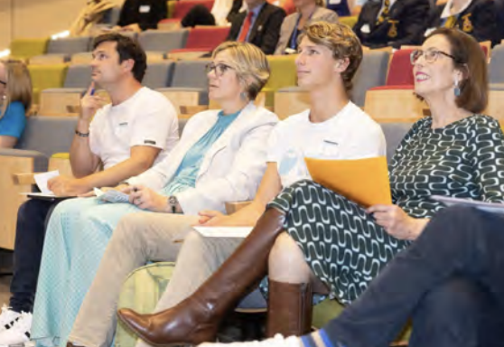

<html>
    <html>
    <head>
        <title>Environment Club</title>
        <link rel="stylesheet" href="gardening.css" type="text/css">
        <link rel="apple-touch-icon" sizes="180x180" href="apple-touch-icon.png">
        <link rel="icon" type="image/png" sizes="32x32" href="favicon-32x32.png">
        <link rel="icon" type="image/png" sizes="16x16" href="favicon-16x16.png">
        <link rel="manifest" href="site.webmanifest">
        <link rel="preconnect" href="https://fonts.googleapis.com">
        <link rel="preconnect" href="https://fonts.gstatic.com" crossorigin>
        <link href="https://fonts.googleapis.com/css2?family=Roboto+Condensed:ital,wght@0,100..900;1,100..900&family=Roboto:ital,wght@0,100;0,300;0,400;0,500;0,700;0,900;1,100;1,300;1,400;1,500;1,700;1,900&display=swap" rel="stylesheet">
        <link rel="stylesheet" href="https://fonts.googleapis.com/css2?family=Material+Symbols+Outlined:opsz,wght,FILL,GRAD@20..48,100..700,0..1,-50..200" />
    </head>

</html>
<body>
<section class="header">
    <nav>
        <a href="index.html"></a>
        <div class="nav-links">
            <ul onmouseleave="hidewhatwedo(); hideevents();">
                <li><a href="index.html">Home</a> </li>
                <li><a href="aboutus.html">About Us</a> </li>
                <li><a href="" class="dropdown_button" onmouseover="setTimeout(showwhatwedo, 300);hideevents();">What we do <span style="font-size: 8pt;">&#9660;</span></a>
                    <script>
                        function showwhatwedo(){
                            var dropdown = document.getElementById("whatwedo");
                            dropdown.style.display = "block";
                        }

                        function hidewhatwedo(){
                            var dropdown = document.getElementById("whatwedo");
                            dropdown.style.display = "none";
                        }

                    </script>
                <div class="dropdown_content" id="whatwedo" onmouseleave="hidewhatwedo();">
                    <a href="recycling.html">Recycling</a>
                    <a href="gardening.html">Gardening</a>
                    <a href="volunteering.html">Volunteering</a>
                </div>   </li>
                <li><a href="" class="dropdown_button" onmouseover="setTimeout(showevents, 300);hidewhatwedo();">Events <span style="font-size: 8pt;">&#9660;</span></a> 
                    <script>
                        function showevents(){
                            var dropdown = document.getElementById("events");
                            dropdown.style.display = "block";
                        }

                        function hideevents(){
                            var dropdown = document.getElementById("events");
                            dropdown.style.display = "none";
                        }
                    </script>
                <div class="dropdown_content" id="events" onmouseleave="hideevents();">
                    <a href="chowderbay.html">Chowder Bay</a>
                    <a href="schoolconference.html">School conference</a>
                    <a href="tarongazoo.html">Taronga Zoo</a>
                </div></li>
                <a href="contactus.html" class="button">Contact Us</a>
            </ul>

        </div>
    </nav>
</section>
<section class="body">
<div class="showcase">
    
    <div class="title_text">
        <h2>Taronga Zoo</h2>
    </div>

    </div>
</section>
<div class="information">
    <div class="image">
        
    </div>

    <div class="text">
        <h2>When was it</h2>
        <p>In 2022, the Environment Club engaged in a Trash Hack competition at Taronga Zoo's Green Schools event. </p>   
        <h2>What was it</h2>
        <p>The event was the Zero Emissions Schools Network meeting to be a part of the Trash Hack Competition. This competition was judged by Olympic diver Sam Fricker, Warringah MP Zali Steggal and other prestigious members of the network. <br><br> The Environment Club presented their ‘trash hack’ which was a mechanism used to compress soft plastics allowing the increase of the volume of plastic that can be recycled in one trip to recycling venues. This was made by year 12 student Ashkia Ramsey-Robert. Other schools also presented their ideas and became inspired by ways Mosman High School can be more sustainable as we work collectively towards a Net Zero Future. Some of these hacks included bird feeders from recycled plastics and an E-waste and pen recycling program.         </p>    
    </div>
</div>

<section class="footer">
<div class="footer">
        <div class="environment_club">
            &nbsp;&nbsp;
            <h3>Environment &nbsp;&nbsp;&nbsp;&nbsp;&nbsp;&nbsp;&nbsp;Club</h3>
            <p>The Mosman High School Environment Club is a group that runs on Tuesday lunchtimes. We work towards a more environmental future.</p>
            &nbsp;&nbsp;&nbsp;&nbsp;&nbsp;&nbsp;<a href="aboutus.html" class="button_footer_logo">About Us</a>
        </div>
         <div class="Whatwedo_footer">
        <h3>What we do</h3>
        <a href="recycling.html" class="whatwedo_footer_links" class="button_whatwedo_cup">Recycling</a>
        <br><br>
        <a href="gardening.html" class="whatwedo_footer_links" class="button_whatwedo_recycling">Gardening</a>
        <br><br>
        <a href="volunteering.html" class="whatwedo_footer_links" class="button_whatwedo_volunteering">Volunteering</a>
      </div>

     <div class="events_footer">
        <h3>Events</h3>
        <a href="chowderbay.html" class="events_footer_links" class="button_events_chowderbay">Chowder Bay</a>
        <br><br>
        <a href="schoolconference.html" class="events_footer_links" class="button_whatwedo_schoolconference">School Conference</a>
        <br><br>
        <a href="tarongazoo.html" class="events_footer_links" class="button_whatwedo_tarongazoo">Taronga Zoo</a>
      </div>

       <div class="contact_footer">
        <h3>Contact</h3>
        <p>769 Military Road, <br>Mosman NSW 2088</p>
        <br>
        <p>mosmanh.school@det.nsw.edu.au</p>
        <br>
        <p>02 9968 1006</p>
        <br><br><br><br><br>

        <p class=" madeby">Website made by Hannah Ishimura Wright</p>

        
    </div>
</div>
    </div>
</section>

</body>

</html>